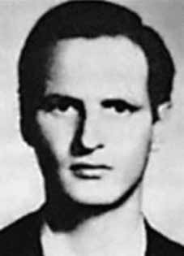

Juares
Guimarães
de Brito
CIRCUNSTÂNCIAS DA MORTE
Por volta das 13 horas do dia 18 de abril de 1970, Juares e a esposa seguiam pela rua Jardim Botânico, ao encontro de Wellington Moreira Diniz. O militante já não havia se apresentado em reunião anterior, porém, apesar dos riscos, eles resolveram comparecer. Posteriormente, Maria do Carmo afirmaria que Wellington estava no local, mas muito abatido, e fez sinal para que não parassem. No retorno, na esquina entre as ruas general Tasso Fragoso e Jardim Botânico, o casal foi abordado por um Volkswagen vermelho. Irrompeu-se um intenso tiroteio. Juares, com o objetivo de não ser preso vivo, disparou contra seu ouvido direito, sendo, em seguida, atingido por diversos tiros desferidos pelos ocupantes do veículo. Na madrugada do dia 19, Maria do Carmo, presa no DOI/CODI do I Exército, recebeu a notícia de que o marido tinha morrido no Hospital Souza Aguiar, no Rio de Janeiro. Matérias do “Estado de Minas”, da época de sua morte, registram que Juares e sua mulher foram sequestrados por “quatros homens armados com metralhadoras e pistolas” e que ele havia morrido após ser atingido por um tiro na cabeça e outro no braço. No laudo de exame cadavérico, os médicos legistas Elias Freitas e Hygino Carvalho de Hércules afirmaram que a data de seu falecimento era 19 de abril, às 4h40, e declararam como causa da morte o ferimento pelo projétil de arma de fogo na cabeça. A confirmação do óbito pela Secretaria de Saúde também indica o dia 19 para sua morte, legitimando a versão de que ele não teria morrido logo em seguida ao tiroteio. Em solicitação de dezembro de 1970, do juiz auditor da 1ª Auditoria da 2ª Região, Antônio Carlos Villanova, diretor do Centro de Informações do Departamento de Polícia Federal, enviou-lhe documentação referente ao militante, que revelava o seu monitoramento pelos órgãos de segurança, ao menos desde 1963. O caso de Juares integra um quadro de ocorrências composto por aqueles que ao negarem ser presos arbitrariamente, cometeram suicídio na iminência da prisão. Seu corpo foi sepultado no cemitério do Bonfim, na sua cidade natal, em 21 de abril de 1970.
At around 1 pm on April 18, 1970, Juares and his wife were walking along Rua Jardim Botânico, meeting Wellington Moreira Diniz. The activist had not presented himself at a previous meeting, however, despite the risks, they decided to attend. Later, Maria do Carmo would state that Wellington was there, but very dejected, and signaled for them not to stop. On their way back, on the corner between General Tasso Fragoso and Jardim Botânico streets, the couple was approached by a red Volkswagen. An intense shootout broke out. Juares, with the aim of not being taken alive, shot himself in the right ear, and was then hit by several shots fired by the vehicle's occupants. In the early hours of the 19th, Maria do Carmo, imprisoned in the DOI/CODI of the 1st Army, received the news that her husband had died at the Souza Aguiar Hospital, in Rio de Janeiro. Articles from “Estado de Minas”, at the time of his death, record that Juares and his wife were kidnapped by “four men armed with machine guns and pistols” and that he had died after being shot in the head and another in the arm. In the cadaver examination report, coroners Elias Freitas and Hygino Carvalho de Hércules stated that the date of his death was April 19, at 4:40 am, and declared the cause of death to be the gunshot wound to the head. The confirmation of death by the Department of Health also indicates the 19th day of his death, legitimizing the version that he did not die immediately after the shooting. In a request in December 1970, from the auditor judge of the 1st Audit of the 2nd Region, Antônio Carlos Villanova, director of the Information Center of the Federal Police Department, sent him documentation relating to the militant, which revealed his monitoring by security agencies, at least since 1963. Juares' case is part of a group of occurrences made up of those who, after refusing to be arbitrarily arrested, committed suicide on the verge of arrest. His body was buried in the Bonfim cemetery, in his hometown, on April 21, 1970.
Alrededor de las 13:00 horas del 18 de abril de 1970, Juares y su esposa caminaban por la Rua Jardim Botânico y se encontraron con Wellington Moreira Diniz. El activista no se había presentado en una reunión anterior, sin embargo, a pesar de los riesgos, decidieron asistir. Más tarde, María do Carmo afirmaría que Wellington estaba allí, pero muy abatido, y les hizo señas para que no se detuvieran. Al regresar, en la esquina entre las calles General Tasso Fragoso y Jardim Botânico, la pareja fue abordada por un Volkswagen rojo. Se desató un intenso tiroteo. Juares, con el objetivo de no ser capturado con vida, se disparó en el oído derecho, siendo luego alcanzado por varios disparos por parte de los ocupantes del vehículo. En la madrugada del día 19, María do Carmo, encarcelada en el DOI/CODI del 1.º Ejército, recibió la noticia de que su marido había fallecido en el Hospital Souza Aguiar, en Río de Janeiro. Artículos del “Estado de Minas”, al momento de su muerte, registran que Juares y su esposa fueron secuestrados por “cuatro hombres armados con ametralladoras y pistolas” y que él había muerto tras recibir un disparo en la cabeza y otro en el brazo. En el informe de examen del cadáver, los médicos forenses Elías Freitas e Hygino Carvalho de Hércules señalaron que la fecha de su muerte fue el 19 de abril, a las 4:40 horas, y declararon que la causa de la muerte fue la herida de bala en la cabeza. La confirmación de la muerte por parte del Departamento de Salud también indica el día 19 de su muerte, legitimando la versión de que no murió inmediatamente después del tiroteo. En un pedido de diciembre de 1970, del juez auditor de la 1.ª Auditoría de la 2.ª Región, Antônio Carlos Villanova, director del Centro de Información del Departamento de la Policía Federal, le envió documentación relativa al militante, que revelaba su seguimiento por parte de los organismos de seguridad, al menos desde 1963. El caso Juares forma parte de un grupo de hechos formado por quienes, tras negarse a ser detenidos arbitrariamente, se suicidaron al borde de la detención. Su cuerpo fue enterrado en el cementerio de Bonfim, en su ciudad natal, el 21 de abril de 1970.